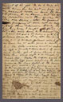
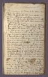
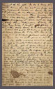
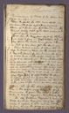

Memorandum of Work to be done on farm in 1864

Memorandum of Work to be done on farm in 1864
Plow the field The old barn stood in for corn (the field next to corner meadow) Clean of[f] & plow for potatoes & corn The cleared patch, back of the new orchard & in front of the house-
Plow up the meadow past of the Graveyard hill & sow in oats & clover & Timothy, Also plow the back corn field & sow in oats if you can get the seed
When too wet or cold to plow let the boys be making rails in the woods next to Frank Gilkerson's field- I mean the strip of wood land in the field back of the field to be plowed for corn- I want that strip cleared out, but not to cut any trees marked as livers-the fence must all be rebuilt around the field intended for corn- Get Dr. Lawson to alter Black Hawk & the bay colt early in April- Also [illegible] to alter & spey the shoats & pigs as soon as the weather begins to get a little warmer- the sooner for that the better- one or two calves he can alter also Have all of the stock salted regularly once in two weeks, and when the grass commences to grow they must be salted once a week regular-every Saturday
The old Dutchman Waggoner (by name) 139 blacksmith in Greenville owes me 139$ which I agreed to take out in work he can mend the waggons- or carriage & C- make him always send a bill of amount of his job- so as to keep even with him- see his ac't on page 25 of my account book- send the Horse to the Lightners- to be shod- but as seldom as possible- and then make them take old shoes- After the ground frrezing it will not be necessary to shoe them behind- Work the iron Grey horse I bought instead of Kit- she will soon be too heavy [mutilated]
I want Kit sent to Dr. Hall's to go to a horse at Gerard Stuart's the 9th day after she has her colt, and if Dr. Hall or Stuart will pasture her her leave her at either place a month or to- The little orchard must be sowed in oats & timothy & clover seed- if you need leather- get it from Beard I have hides there which ought to be tanned by March 1864, Make the negroes haul the old rails (left from repairing the fence around the corn field)- to the house for fire wood- I'm giving in a list of the property to [illegible]- remember you are to assess it what you beleive it will sell for at cash- he is always inclined to value it too high- Curb him-
Plant sugar cane on side of the hill above the 2nd bridge at the old house- & flax seed on this side of both bridges in same field, dont plow up more than 1/2 of that hill it will wash too much- plow up all the hill across the branch & out towards the back gate next to Atkinson's woods [remaining pages missing]
 Return to Letters & Documents
Return to Letters & Documents